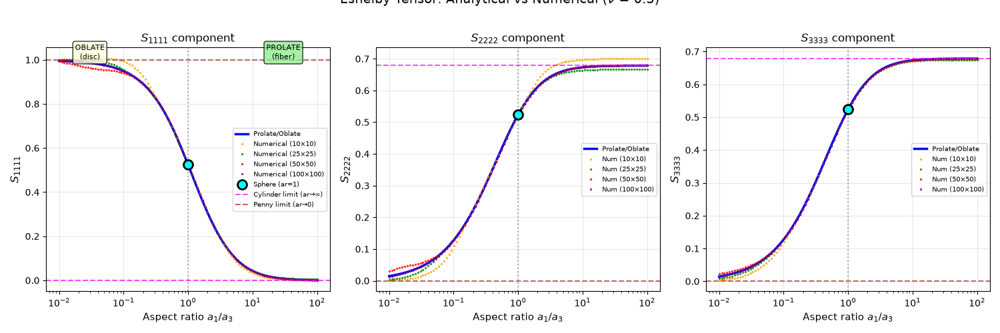
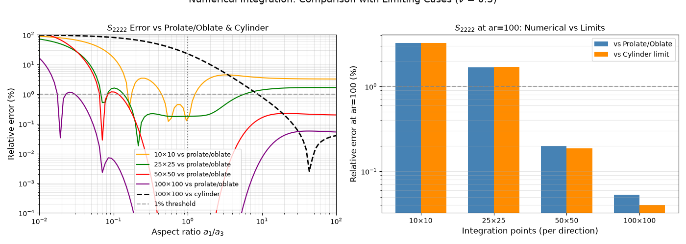

Note
Go to the end to download the full example code.
Numerical vs Analytical Eshelby Tensor Comparison
This example compares numerical integration with analytical formulas for the Eshelby tensor across a wide range of aspect ratios.
import numpy as np
import simcoon as sim
import matplotlib.pyplot as plt
The Eshelby tensor can be computed either analytically (for special inclusion shapes) or numerically (via integration over the unit sphere). This example investigates the agreement between these methods across different aspect ratios.
Shape classification:
\(ar \to 0\): Penny-shaped crack (oblate limit)
\(ar < 1\): Oblate ellipsoid (disc-like, use
Eshelby_oblate)\(ar = 1\): Sphere (use
Eshelby_sphere)\(ar > 1\): Prolate ellipsoid (fiber-like, use
Eshelby_prolate)\(ar \to \infty\): Infinite cylinder (prolate limit, use
Eshelby_cylinder)
nu = 0.3 # Poisson ratio of the matrix
# Define an isotropic stiffness tensor for numerical integration
E = 70000.0 # Young's modulus (MPa)
L = sim.L_iso([E, nu], "Enu")
# Reference values for limiting cases
S_sphere = sim.Eshelby_sphere(nu)
S_cylinder = sim.Eshelby_cylinder(nu)
S_penny = sim.Eshelby_penny(nu)
print("Reference Eshelby tensor values:")
print(f" Sphere: S_1111 = {S_sphere[0, 0]:.4f}, S_2222 = {S_sphere[1, 1]:.4f}")
print(f" Cylinder: S_1111 = {S_cylinder[0, 0]:.4f}, S_2222 = {S_cylinder[1, 1]:.4f}")
print(f" Penny: S_1111 = {S_penny[0, 0]:.4f}, S_2222 = {S_penny[1, 1]:.4f}")
Reference Eshelby tensor values:
Sphere: S_1111 = 0.5238, S_2222 = 0.5238
Cylinder: S_1111 = 0.0000, S_2222 = 0.6786
Penny: S_1111 = 1.0000, S_2222 = 0.0000
Aspect Ratio Sweep
We compute the Eshelby tensor for aspect ratios spanning from very oblate (0.01) to very prolate (100), comparing analytical and numerical solutions.
# Define aspect ratios spanning from very oblate to very prolate
aspect_ratios = np.logspace(-2, 2, 100) # From 0.01 to 100
# Storage for analytical results
S_11_analytical = np.zeros(len(aspect_ratios))
S_22_analytical = np.zeros(len(aspect_ratios))
S_33_analytical = np.zeros(len(aspect_ratios))
print("\nComputing Eshelby tensors for various aspect ratios...")
print("Shape transitions:")
print(" ar → 0 : Penny-shaped crack (use Eshelby_penny)")
print(" ar < 1 : Oblate ellipsoid (disc-like, use Eshelby_oblate)")
print(" ar = 1 : Sphere (use Eshelby_sphere)")
print(" ar > 1 : Prolate ellipsoid (fiber-like, use Eshelby_prolate)")
print(" ar → ∞ : Infinite cylinder (use Eshelby_cylinder)")
# Compute analytical solutions
for i, ar in enumerate(aspect_ratios):
# Analytical solution: switch formula at ar = 1
# - Oblate formula valid for ar < 1 (a1 < a2 = a3)
# - Prolate formula valid for ar > 1 (a1 > a2 = a3)
# Both converge to sphere solution at ar = 1
if ar >= 1.0:
S_ana = sim.Eshelby_prolate(nu, ar)
else:
S_ana = sim.Eshelby_oblate(nu, ar)
S_11_analytical[i] = S_ana[0, 0]
S_22_analytical[i] = S_ana[1, 1]
S_33_analytical[i] = S_ana[2, 2]
Computing Eshelby tensors for various aspect ratios...
Shape transitions:
ar → 0 : Penny-shaped crack (use Eshelby_penny)
ar < 1 : Oblate ellipsoid (disc-like, use Eshelby_oblate)
ar = 1 : Sphere (use Eshelby_sphere)
ar > 1 : Prolate ellipsoid (fiber-like, use Eshelby_prolate)
ar → ∞ : Infinite cylinder (use Eshelby_cylinder)
Numerical Integration Convergence
We test different numbers of integration points to assess convergence.
# Test different numbers of integration points
int_points_list = [10, 25, 50, 100]
colors_int = ["orange", "green", "red", "purple"]
# Compute numerical results for different integration point counts
S_11_by_npts = {}
S_22_by_npts = {}
S_33_by_npts = {}
for npts in int_points_list:
S_11_by_npts[npts] = np.zeros(len(aspect_ratios))
S_22_by_npts[npts] = np.zeros(len(aspect_ratios))
S_33_by_npts[npts] = np.zeros(len(aspect_ratios))
for i, ar in enumerate(aspect_ratios):
S_num = sim.Eshelby(L, ar, 1.0, 1.0, npts, npts)
S_11_by_npts[npts][i] = S_num[0, 0]
S_22_by_npts[npts][i] = S_num[1, 1]
S_33_by_npts[npts][i] = S_num[2, 2]
Plot: Analytical vs Numerical Eshelby Tensor Components
This plot shows how the diagonal components of the Eshelby tensor vary with aspect ratio, comparing analytical formulas (lines) with numerical integration (markers) for different numbers of integration points.
fig, axes = plt.subplots(1, 3, figsize=(15, 5))
# S_1111 component
ax = axes[0]
ax.semilogx(aspect_ratios, S_11_analytical, "b-", linewidth=2.5, label="Prolate/Oblate")
for npts, col in zip(int_points_list, colors_int):
ax.semilogx(
aspect_ratios,
S_11_by_npts[npts],
".",
markersize=3,
alpha=0.7,
color=col,
label=f"Numerical ({npts}×{npts})",
)
# Mark limiting cases
ax.plot(
1,
S_sphere[0, 0],
"ko",
markersize=10,
markerfacecolor="cyan",
markeredgewidth=2,
label=f"Sphere (ar=1)",
zorder=5,
)
ax.axhline(
y=S_cylinder[0, 0],
color="magenta",
linestyle="--",
alpha=0.7,
label=f"Cylinder limit (ar→∞)",
)
ax.axhline(
y=S_penny[0, 0],
color="brown",
linestyle="--",
alpha=0.7,
label=f"Penny limit (ar→0)",
)
ax.axvline(x=1, color="k", linestyle=":", alpha=0.3)
# Add shape region annotations
ax.text(
0.03,
ax.get_ylim()[1] * 0.95,
"OBLATE\n(disc)",
fontsize=8,
ha="center",
bbox=dict(boxstyle="round", facecolor="lightyellow", alpha=0.8),
)
ax.text(
30,
ax.get_ylim()[1] * 0.95,
"PROLATE\n(fiber)",
fontsize=8,
ha="center",
bbox=dict(boxstyle="round", facecolor="lightgreen", alpha=0.8),
)
ax.set_xlabel("Aspect ratio $a_1/a_3$", fontsize=11)
ax.set_ylabel("$S_{1111}$", fontsize=12)
ax.set_title("$S_{1111}$ component", fontsize=12)
ax.legend(fontsize=7, loc="center right")
ax.grid(True, alpha=0.3)
# S_2222 component
ax = axes[1]
ax.semilogx(aspect_ratios, S_22_analytical, "b-", linewidth=2.5, label="Prolate/Oblate")
for npts, col in zip(int_points_list, colors_int):
ax.semilogx(
aspect_ratios,
S_22_by_npts[npts],
".",
markersize=3,
alpha=0.7,
color=col,
label=f"Num ({npts}×{npts})",
)
ax.plot(
1,
S_sphere[1, 1],
"ko",
markersize=10,
markerfacecolor="cyan",
markeredgewidth=2,
zorder=5,
)
ax.axhline(y=S_cylinder[1, 1], color="magenta", linestyle="--", alpha=0.7)
ax.axhline(y=S_penny[1, 1], color="brown", linestyle="--", alpha=0.7)
ax.axvline(x=1, color="k", linestyle=":", alpha=0.3)
ax.set_xlabel("Aspect ratio $a_1/a_3$", fontsize=11)
ax.set_ylabel("$S_{2222}$", fontsize=12)
ax.set_title("$S_{2222}$ component", fontsize=12)
ax.legend(fontsize=7, loc="best")
ax.grid(True, alpha=0.3)
# S_3333 component
ax = axes[2]
ax.semilogx(aspect_ratios, S_33_analytical, "b-", linewidth=2.5, label="Prolate/Oblate")
for npts, col in zip(int_points_list, colors_int):
ax.semilogx(
aspect_ratios,
S_33_by_npts[npts],
".",
markersize=3,
alpha=0.7,
color=col,
label=f"Num ({npts}×{npts})",
)
ax.plot(
1,
S_sphere[2, 2],
"ko",
markersize=10,
markerfacecolor="cyan",
markeredgewidth=2,
zorder=5,
)
ax.axhline(y=S_cylinder[2, 2], color="magenta", linestyle="--", alpha=0.7)
ax.axhline(y=S_penny[2, 2], color="brown", linestyle="--", alpha=0.7)
ax.axvline(x=1, color="k", linestyle=":", alpha=0.3)
ax.set_xlabel("Aspect ratio $a_1/a_3$", fontsize=11)
ax.set_ylabel("$S_{3333}$", fontsize=12)
ax.set_title("$S_{3333}$ component", fontsize=12)
ax.legend(fontsize=7, loc="best")
ax.grid(True, alpha=0.3)
plt.suptitle(
f"Eshelby Tensor: Analytical vs Numerical ($\\nu$ = {nu})", fontsize=14, y=1.02
)
plt.tight_layout()
plt.show()

Relative Error Analysis
This plot shows the relative error between numerical and analytical solutions for different numbers of integration points.
Important note: At extreme aspect ratios (ar→100), the \(S_{1111}\) component converges to 0 (cylinder limit), so relative errors appear large. However, for \(S_{2222}\) and \(S_{3333}\), the numerical solution is actually closer to the cylinder limit than the prolate analytical formula! This suggests the numerical integration correctly captures the limiting behavior.
# Compute relative errors vs analytical (prolate/oblate) for each integration point count
eps = 1e-10
errors_by_npts = {}
for npts in int_points_list:
errors_by_npts[npts] = {
"S11": np.abs(S_11_by_npts[npts] - S_11_analytical)
/ (np.abs(S_11_analytical) + eps),
"S22": np.abs(S_22_by_npts[npts] - S_22_analytical)
/ (np.abs(S_22_analytical) + eps),
"S33": np.abs(S_33_by_npts[npts] - S_33_analytical)
/ (np.abs(S_33_analytical) + eps),
}
# Also compute errors vs cylinder limit for high aspect ratios
errors_vs_cyl = {}
for npts in int_points_list:
errors_vs_cyl[npts] = {
"S22": np.abs(S_22_by_npts[npts] - S_cylinder[1, 1])
/ (np.abs(S_cylinder[1, 1]) + eps),
"S33": np.abs(S_33_by_npts[npts] - S_cylinder[2, 2])
/ (np.abs(S_cylinder[2, 2]) + eps),
}
# Compute errors vs penny limit for low aspect ratios
errors_vs_penny = {}
for npts in int_points_list:
errors_vs_penny[npts] = {
"S11": np.abs(S_11_by_npts[npts] - S_penny[0, 0])
/ (np.abs(S_penny[0, 0]) + eps),
"S22": np.abs(S_22_by_npts[npts] - S_penny[1, 1])
/ (np.abs(S_penny[1, 1]) + eps),
}
Plot: Error Comparison with Limiting Cases
fig, axes = plt.subplots(1, 2, figsize=(14, 5))
# Left plot: Error vs aspect ratio for S_2222 (better behaved than S_1111)
ax = axes[0]
for npts, col in zip(int_points_list, colors_int):
ax.loglog(
aspect_ratios,
errors_by_npts[npts]["S22"] * 100,
"-",
linewidth=1.5,
color=col,
label=f"{npts}×{npts} vs prolate/oblate",
)
# Add cylinder comparison for 100x100
ax.loglog(
aspect_ratios,
errors_vs_cyl[100]["S22"] * 100,
"k--",
linewidth=2,
label="100×100 vs cylinder",
)
ax.axvline(x=1, color="k", linestyle=":", alpha=0.5)
ax.axhline(y=1, color="gray", linestyle="--", alpha=0.7, label="1% threshold")
ax.set_xlabel("Aspect ratio $a_1/a_3$", fontsize=12)
ax.set_ylabel("Relative error (%)", fontsize=12)
ax.set_title("$S_{2222}$ Error vs Prolate/Oblate & Cylinder", fontsize=12)
ax.legend(fontsize=9, loc="best")
ax.grid(True, alpha=0.3, which="both")
ax.set_xlim([0.01, 100])
ax.set_ylim([1e-4, 100])
# Right plot: At ar=100, compare numerical vs analytical vs cylinder
ax = axes[1]
idx_high = -1 # ar = 100
ar_high = aspect_ratios[idx_high]
# Bar chart comparing errors at ar=100
x_pos = np.arange(len(int_points_list))
width = 0.35
err_vs_ana = [errors_by_npts[npts]["S22"][idx_high] * 100 for npts in int_points_list]
err_vs_cyl = [errors_vs_cyl[npts]["S22"][idx_high] * 100 for npts in int_points_list]
bars1 = ax.bar(
x_pos - width / 2, err_vs_ana, width, label="vs Prolate/Oblate", color="steelblue"
)
bars2 = ax.bar(
x_pos + width / 2, err_vs_cyl, width, label="vs Cylinder limit", color="darkorange"
)
ax.set_yscale("log")
ax.set_xlabel("Integration points (per direction)", fontsize=12)
ax.set_ylabel("Relative error at ar=100 (%)", fontsize=12)
ax.set_title(f"$S_{{2222}}$ at ar={ar_high:.0f}: Numerical vs Limits", fontsize=12)
ax.set_xticks(x_pos)
ax.set_xticklabels([f"{n}×{n}" for n in int_points_list])
ax.legend(fontsize=10, loc="best")
ax.axhline(y=1, color="gray", linestyle="--", alpha=0.7)
ax.grid(True, alpha=0.3, which="both", axis="y")
plt.suptitle(
f"Numerical Integration: Comparison with Limiting Cases ($\\nu$ = {nu})",
fontsize=14,
y=1.02,
)
plt.tight_layout()
plt.show()

Convergence to Limiting Cases
Let’s verify that the numerical Eshelby tensor converges to the analytical limits for sphere and cylinder as aspect ratio approaches 1 and infinity.
print("\n" + "=" * 70)
print("Convergence Analysis")
print("=" * 70)
# Find index closest to ar = 1 (sphere)
idx_sphere = np.argmin(np.abs(aspect_ratios - 1.0))
print(f"\n--- At ar = {aspect_ratios[idx_sphere]:.3f} (near sphere) ---")
print(f" Reference values:")
print(f" Sphere S_2222: {S_sphere[1, 1]:.6f}")
print(f" Prolate/Oblate S_2222: {S_22_analytical[idx_sphere]:.6f}")
print(f" Numerical results:")
for npts in int_points_list:
err = errors_by_npts[npts]["S22"][idx_sphere] * 100
print(
f" {npts:3d}×{npts:3d} pts: {S_22_by_npts[npts][idx_sphere]:.6f} (vs prolate/oblate: {err:.4f}%)"
)
# Very prolate (large ar) - compare with CYLINDER limit
idx_prolate = -1
print(
f"\n--- At ar = {aspect_ratios[idx_prolate]:.0f} (very prolate, approaching cylinder) ---"
)
print(f" Reference values:")
print(f" Cylinder S_2222: {S_cylinder[1, 1]:.6f} <-- true limit as ar→∞")
print(f" Prolate S_2222: {S_22_analytical[idx_prolate]:.6f}")
print(f" Numerical results (comparing to BOTH references):")
for npts in int_points_list:
val = S_22_by_npts[npts][idx_prolate]
err_ana = errors_by_npts[npts]["S22"][idx_prolate] * 100
err_cyl = errors_vs_cyl[npts]["S22"][idx_prolate] * 100
print(
f" {npts:3d}×{npts:3d} pts: {val:.6f} (vs prolate: {err_ana:.2f}%, vs cylinder: {err_cyl:.2f}%)"
)
print(" → Numerical is CLOSER to cylinder limit than prolate formula!")
# Very oblate (small ar) - compare with PENNY limit
idx_oblate = 0
print(
f"\n--- At ar = {aspect_ratios[idx_oblate]:.4f} (very oblate, approaching penny) ---"
)
print(f" Reference values:")
print(f" Penny S_1111: {S_penny[0, 0]:.6f} <-- true limit as ar→0")
print(f" Oblate S_1111: {S_11_analytical[idx_oblate]:.6f}")
print(f" Numerical results (comparing to BOTH references):")
for npts in int_points_list:
val = S_11_by_npts[npts][idx_oblate]
err_ana = errors_by_npts[npts]["S11"][idx_oblate] * 100
err_pen = errors_vs_penny[npts]["S11"][idx_oblate] * 100
print(
f" {npts:3d}×{npts:3d} pts: {val:.6f} (vs oblate: {err_ana:.2f}%, vs penny: {err_pen:.2f}%)"
)
print(" → Both oblate formula and numerical converge toward penny limit!")
======================================================================
Convergence Analysis
======================================================================
--- At ar = 0.955 (near sphere) ---
Reference values:
Sphere S_2222: 0.523810
Prolate/Oblate S_2222: 0.516243
Numerical results:
10× 10 pts: 0.515581 (vs prolate/oblate: 0.1281%)
25× 25 pts: 0.515316 (vs prolate/oblate: 0.1795%)
50× 50 pts: 0.516243 (vs prolate/oblate: 0.0000%)
100×100 pts: 0.516243 (vs prolate/oblate: 0.0000%)
--- At ar = 100 (very prolate, approaching cylinder) ---
Reference values:
Cylinder S_2222: 0.678571 <-- true limit as ar→∞
Prolate S_2222: 0.678483
Numerical results (comparing to BOTH references):
10× 10 pts: 0.700553 (vs prolate: 3.25%, vs cylinder: 3.24%)
25× 25 pts: 0.667101 (vs prolate: 1.68%, vs cylinder: 1.69%)
50× 50 pts: 0.679841 (vs prolate: 0.20%, vs cylinder: 0.19%)
100×100 pts: 0.678845 (vs prolate: 0.05%, vs cylinder: 0.04%)
→ Numerical is CLOSER to cylinder limit than prolate formula!
--- At ar = 0.0100 (very oblate, approaching penny) ---
Reference values:
Penny S_1111: 1.000000 <-- true limit as ar→0
Oblate S_1111: 0.995429
Numerical results (comparing to BOTH references):
10× 10 pts: 1.000841 (vs oblate: 0.54%, vs penny: 0.08%)
25× 25 pts: 0.998428 (vs oblate: 0.30%, vs penny: 0.16%)
50× 50 pts: 0.992432 (vs oblate: 0.30%, vs penny: 0.76%)
100×100 pts: 0.999794 (vs oblate: 0.44%, vs penny: 0.02%)
→ Both oblate formula and numerical converge toward penny limit!
Total running time of the script: (0 minutes 0.596 seconds)